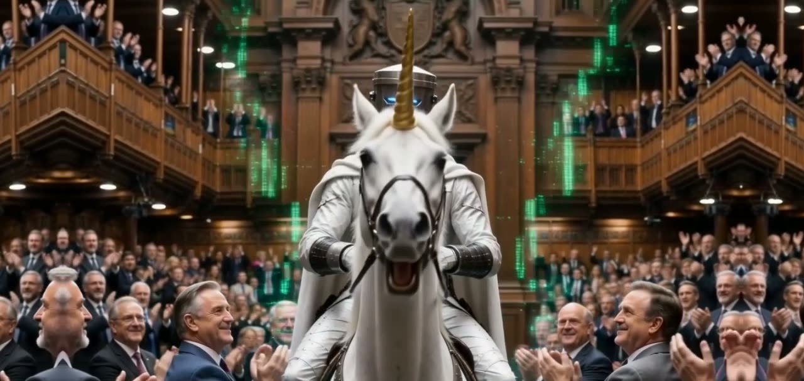

Planetary Council broadcast · 174 BPM · 4:17
Vote for
the Bin
Count Binface rides a unicorn into Parliament, and the country finally has a serious option.

Satire, obviously. All cameos are parody. The Bin, however, is real.
Why this is different
VOTE FOR THE BIN is not a music video with a visualizer stuck on. It is an artwork that listens — and you can hold it in your browser. The film sits untouched in a sacred square; everything around it is driven by the actual stems of the song and by the pixels of the film itself. Nothing is random. Seek anywhere and the artwork is identical, to the frame.
How it thinks
- Ten stems, analysed offline into 7,719 frames of energy, onsets and bands — VOICE, CHOIR, RHYTHM, BASS and MUSIC each drive their own limb of the artwork.
- The picture listens too: every frame scored on a 10×10 grid for busyness, palette, colourfulness, contrast and motion.
- The metric roulette: at every audio peak, the engine rotates which picture-metric drives the kaleidoscope. Audio decides WHEN. The picture decides HOW MUCH.
- Lyrics whose shadows dance: the letters hold still — readable — while each letter's chromatic ghost plays the mix on its own phase.
- Achievements, out of nowhere. Watch long enough and the artwork congratulates you. They live inside the lyrics file, like everything else here: authored, deterministic, real.
- ~60 preserved iterations, built in a human–AI collaboration between Marsita the Ultra and Claude. Every version kept. The full thinking process is in the artwork's ABOUT panel.